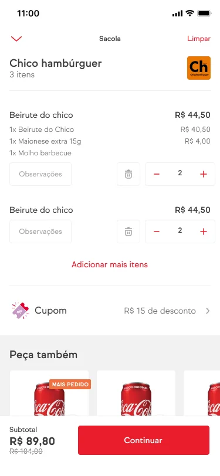
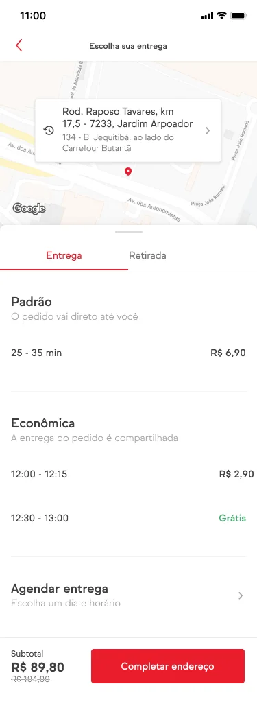
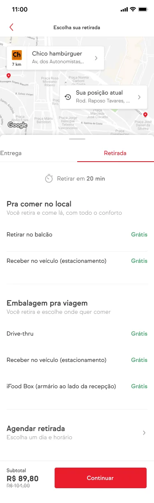
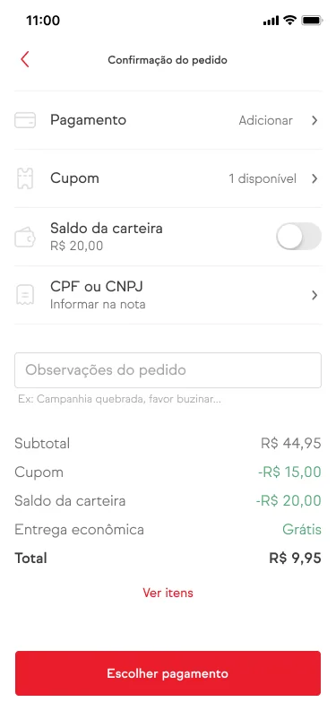
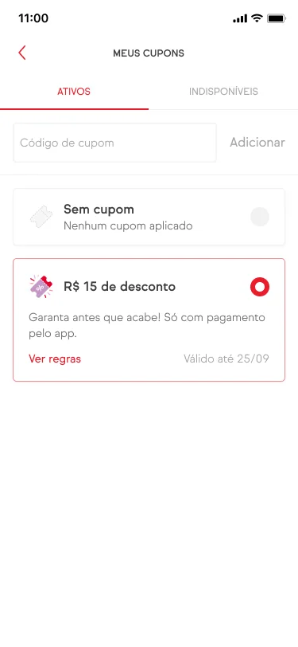
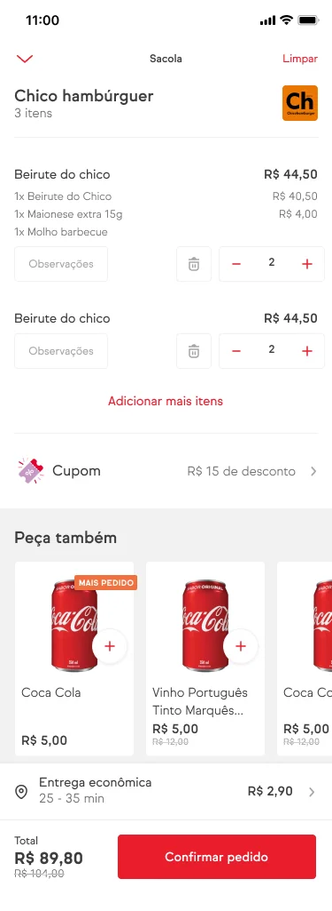
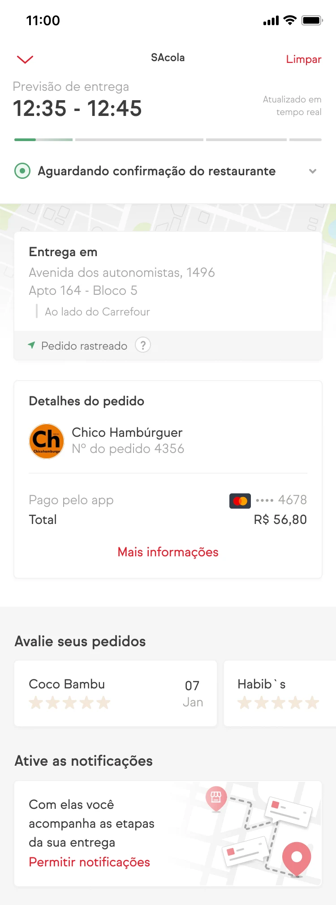
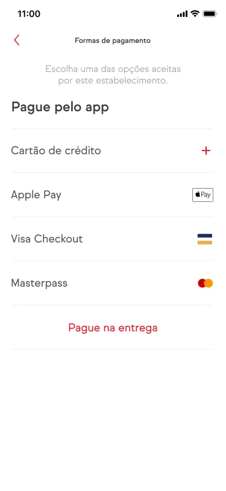

Uma compra só é simples quando as decisões fazem sentido em cada etapa. No iFood, o desafio era dar clareza a modalidades, valores e pagamentos — e manter a pessoa informada depois de confirmar o pedido.
Itens, modalidade, endereço, pagamento e benefícios precisam formar uma sequência compreensível.
Status, expectativa de entrega e próximos passos precisam manter a pessoa informada.
Escutar os restaurantes antes de redesenhar a compra.
Como Product Designer Sênior, atuei de ponta a ponta no trabalho, desde a descoberta até a concepção e validação da experiência. O discovery envolveu 20 restaurantes parceiros e trouxe à tona dores com a compreensão de descontos da parceria com o iFood, cálculos, gestão de pedidos e diferenciação entre balcão e delivery/entrega.
Esses achados reforçaram a necessidade de tratar o checkout como parte de um serviço maior, no qual regras financeiras, modalidades de atendimento e comunicação precisam permanecer coerentes ao longo da jornada.
Mostrar de forma legível os componentes do pedido, benefícios e condições de pagamento.
Diferenciar as escolhas de entrega e retirada e preservar as informações relevantes para cada contexto.
Articular etapas de checkout, confirmação e espera sem perder o contexto da compra.
Considerar os desafios relatados pelos restaurantes ao receber e organizar pedidos.
Uma decisão de cada vez, sem perder o contexto.
O fluxo de checkout organiza a navegação da sacola até a confirmação: escolher entrega ou retirada, selecionar pagamento e cupom, revisar as informações e acompanhar o pedido.



Antes de confirmar, entender exatamente o que está sendo pago.
A jornada oferece pagamento pelo aplicativo ou na entrega, aplicação de cupons e revisão de valores, distribuindo as decisões sem sobrecarregar uma única etapa.



Depois do pedido, a previsibilidade continua.
Na etapa de espera, previsão de entrega, confirmação do restaurante e notificações conectam a promessa feita no checkout à informação que o cliente recebe após o pedido.


Decisões que conectam compra e operação.
Separar decisões por momento
Organizar modalidade, pagamento e confirmação em momentos distintos para favorecer escolhas mais claras.
Explicitar as condições
Deixar mais visíveis prazos, valores, disponibilidade e estados de um pedido.
Conectar compra e acompanhamento
Preservar continuidade de informação na transição entre checkout e waiting.
Da validação ao uso em produção.
O projeto avançou para produção e, segundo os resultados relatados, alcançou uma taxa de adoção de 25% dos restaurantes após o lançamento. A versão avaliada em testes de usabilidade também recebeu resultados positivos nas métricas CES (Customer Effort Score) e SUS (System Usability Scale).